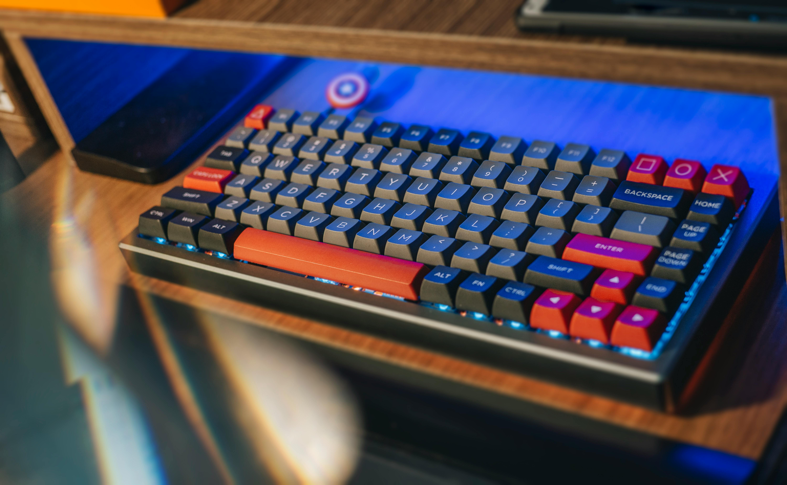

TERPORT Z-11 Teclado Mecánico Español
62 teclas, 60% teclado español portátil con tecla Ñ. Diseño compacto ideal para juegos. Iluminación arco iris RGB. Switches azules para una experiencia táctil satisfactoria. Cable tipo-C desmontable para mayor comodidad.
$500 MXN
$400 MXN
-20%
Características Principales
- 62 teclas compactas
- Switch azul mecánico
- Iluminación RGB arco iris
- Cable USB-C desmontable